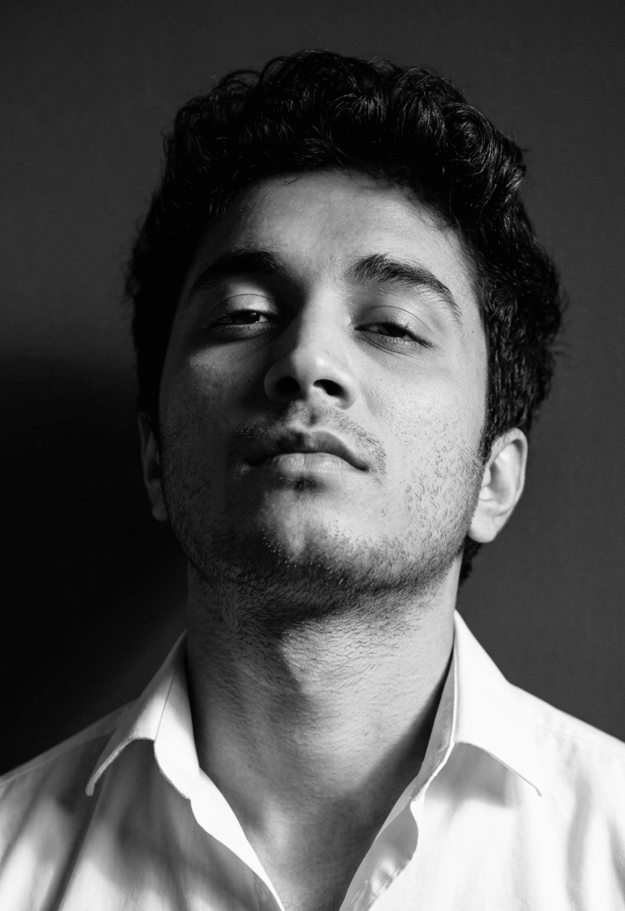

Product · Project · Marketing · Innovation Produkt · Projekt · Marketing · Innovation
M.Eng student in Technology & Innovation Management. Building products at the intersection of strategy, design, and engineering. M.Eng-Student in Technologie- und Innovationsmanagement. Produkte an der Schnittstelle von Strategie, Design und Technik.
Explore my work Meine Arbeit entdecken"And a new day will dawn for those who stand long."
— Led Zeppelin001
Sustainable Product Strategy — Recycled Rubber
003
YOLO-Based Drone Recognition
005
Deep Learning — Reliable User Identification
002
Smart Necklace Product Concept
001
Sustainable Product Strategy — Recycled Rubber
003
YOLO-Based Drone Recognition
005
Deep Learning — Reliable User Identification
002
Smart Necklace Product Concept
004
Idea Engineering — Elbfabrik Collaboration Formats
006
Technology Assessment — Smart Homes & Buildings
001
Recycled Rubber — Eco Product Line
003
Real-Time Drone Detection System
004
Idea Engineering — Elbfabrik Collaboration Formats
006
Technology Assessment — Smart Homes & Buildings
001
Recycled Rubber — Eco Product Line
003
Real-Time Drone Detection System
005
Crisis Tweet Classification — 94.54% Accuracy
002
Smart Necklace — Agile Sprint & Video Production
006
Technology Radar — AI, IoT & Blockchain Adoption
004
Fraunhofer IFF — Innovation Platform Design
005
Crisis Tweet Classification — 94.54% Accuracy
002
Smart Necklace — Agile Sprint & Video Production
006
Technology Radar — AI, IoT & Blockchain Adoption
004
Fraunhofer IFF — Innovation Platform Design

Presenting research — HS Harz, 2025 Forschungspräsentation — HS Harz, 2025
AboutÜber mich
I grew up in Kolhapur — a city that smells of sugarcane and engine oil, where my family ran a spray-painting workshop and craft was never separate from work. That early education in making things with your hands never really left me. It just changed form. Aufgewachsen in Kolhapur — einer Stadt, die nach Zuckerrohr und Motoröl riecht, wo meine Familie eine Spritzlackier-Werkstatt betrieb und Handwerk nie von Arbeit zu trennen war. Diese frühe Erziehung im Erschaffen mit den Händen hat mich nie wirklich verlassen. Sie hat nur die Form gewechselt.
Pune followed — engineering, late nights, a degree from D.Y. Patil, and two years learning how real businesses actually run. I coordinated triathlon events, managed supply chains, understood that strategy without execution is just noise. Then Germany called, and I answered. Dann Pune — Ingenieurwesen, späte Nächte, ein Abschluss am D.Y. Patil, zwei Jahre damit, zu verstehen, wie echte Unternehmen wirklich funktionieren. Triathlon-Events koordiniert, Lieferketten gemanagt, verstanden, dass Strategie ohne Umsetzung nur Lärm ist. Dann rief Deutschland, und ich antwortete.
Now at Hochschule Harz, building at the intersection of product, marketing and innovation. Fuelled by football, history, and the kind of music that reminds you that some things are worth the long road — Zeppelin, GN'R, the whole canon. Jetzt an der Hochschule Harz, an der Schnittstelle von Produkt, Marketing und Innovation. Angetrieben von Fußball, Geschichte und Musik, die einem daran erinnert, dass manche Dinge den langen Weg wert sind — Zeppelin, GN'R, der ganze Kanon.
ProjectsProjekte
001
End-to-end product strategy: user persona research, stakeholder analysis, requirements definition, and concept pitching for an eco-friendly rubber product line.End-to-End-Produktstrategie: Nutzer-Persona-Forschung, Stakeholderanalyse, Anforderungsdefinition und Konzeptpitch für eine umweltfreundliche Gummiproduktlinie.
View Case Study →Fallstudie ansehen →
002
Led an Agile sprint for concept validation and feedback-driven design iteration. Produced a digital marketing video in DaVinci Resolve and Canva.Leitete einen Agile-Sprint zur Konzeptvalidierung. Produzierte ein digitales Marketingvideo in DaVinci Resolve und Canva.
View Case Study →Fallstudie ansehen →
003
Real-time object detection system achieving >90% precision — reducing false positives by 25% and improving detection speed by 35% in an Industry 4.0 environment.Echtzeit-Objekterkennung mit >90% Präzision — 25% weniger Falschpositive, 35% schnellere Erkennung in einer Industrie-4.0-Umgebung.
View Case Study →Fallstudie ansehen →
004
Systematic innovation management study: applied 5 Whys root cause analysis, brainstorming, and multi-criteria Benefit Analysis to design 5 collaboration formats for Fraunhofer IFF's Elbfabrik hub.Systematische Innovationsmanagementstudie: 5-Warum-Analyse, Brainstorming und Nutzwertanalyse zur Entwicklung von 5 Kollaborationsformaten für das Fraunhofer IFF Elbfabrik.
View Case Study →Fallstudie ansehen →
005
Academic paper presentation analysing a Bi-LSTM system that achieved 94.54% accuracy in classifying disaster-related tweets, combining VADER sentiment analysis and K-means clustering to identify trustworthy social media users.Präsentation eines akademischen Papers: Bi-LSTM-System mit 94,54 % Genauigkeit bei der Klassifizierung katastrophenbezogener Tweets mittels VADER-Sentiment-Analyse und K-Means-Clustering.
View Case Study →Fallstudie ansehen →
006
Group TAS project comparing smart home innovation strategies for the USA and Thailand. Conducted PESTEL analysis, proposed four innovations, and produced a Technology Radar mapping adoption readiness across AI, IoT, and blockchain tools.Gruppen-TAS-Projekt: PESTEL-Analyse für USA und Thailand, vier Innovationsvorschläge und ein Technology Radar zur Bewertung von KI-, IoT- und Blockchain-Tools.
View Case Study →Fallstudie ansehen →
SkillsKenntnisse
A toolkit built across product, project, marketing, and technology disciplines.Ein Werkzeugkasten aus Produkt-, Projekt-, Marketing- und Technologiebereichen.
Digital ToolsDigitale Tools
Agile & ProjectAgile & Projekt
Marketing
InnovationInnovation
Let's connectLass uns vernetzen
Open to internships, collaborations
& new opportunities.Offen für Praktika, Kooperationen
& neue Möglichkeiten.
Product Strategy · HS HarzProduktstrategie · HS Harz
A full product strategy project exploring the feasibility and market potential of eco-friendly rubber products — from user persona definition to stakeholder pitching and concept prototyping.Ein vollständiges Produktstrategieprojekt zur Bewertung der Machbarkeit und des Marktpotenzials umweltfreundlicher Gummiprodukte — von der Nutzer-Persona-Definition bis hin zu Stakeholder-Pitching und Konzeptprototyping.
User Personas DefinedDefinierte Nutzer-Personas
Persona 1 — The Eco-Conscious ConsumerPersona 1 — Der umweltbewusste Verbraucher
Urban professional, 25–40, actively chooses sustainable brands. Willing to pay a premium for certified eco-friendly products. Values transparency in materials and production.Urbaner Berufstätiger, 25–40, wählt aktiv nachhaltige Marken. Bereit, einen Aufpreis für zertifizierte Öko-Produkte zu zahlen. Legt Wert auf Transparenz bei Materialien und Produktion.
Persona 2 — The Industrial BuyerPersona 2 — Der industrielle Käufer
Procurement manager in manufacturing, 35–55. Prioritises cost-efficiency and compliance. Interested in recycled materials for regulatory and ESG reporting advantages.Einkaufsleiter in der Industrie, 35–55. Priorisiert Kosteneffizienz und Compliance. Interessiert an recycelten Materialien für regulatorische und ESG-Reporting-Vorteile.
Persona 3 — The Retail PartnerPersona 3 — Der Einzelhandelspartner
Buyer at a mid-sized retail chain, 30–50. Seeks differentiated products with sustainability credentials to meet growing consumer demand and brand positioning goals.Einkäufer bei einer mittelgroßen Einzelhandelskette, 30–50. Sucht differenzierte Produkte mit Nachhaltigkeitsnachweisen, um der wachsenden Verbrauchernachfrage gerecht zu werden.
MethodologyMethodik
Key InsightsWichtige Erkenntnisse
Market GapMarktlücke
Identified an underserved segment of mid-market B2B buyers seeking eco-certified rubber components with competitive pricing — no strong incumbent players at this intersection.Eine unterversorgte Zielgruppe von mittelständischen B2B-Käufern identifiziert, die öko-zertifizierte Gummikomponenten zu wettbewerbsfähigen Preisen suchen.
Value PropositionWertversprechen
Recycled rubber products positioned as both a cost-reduction lever and an ESG compliance tool — giving buyers dual justification for procurement decisions.Recycelte Gummiprodukte als Kostensenkungshebel und ESG-Compliance-Tool positioniert — doppelte Rechtfertigung für Beschaffungsentscheidungen.
Outcome & DeliverablesErgebnis & Liefergegenstände
Modules AppliedAngewandte Module
Agile Sprint · Marketing Production · HS HarzAgile-Sprint · Marketingproduktion · HS Harz
A concept product developed through a structured Agile sprint — from ideation to validated prototype — culminating in a professional digital marketing video produced in DaVinci Resolve and Canva.Ein Konzeptprodukt, das durch einen strukturierten Agile-Sprint entwickelt wurde — von der Ideenfindung bis zum validierten Prototyp — mit einem professionellen Marketingvideo in DaVinci Resolve und Canva.
Project OverviewProjektübersicht
GoalZiel
Design and validate a smart wearable necklace concept through rapid Agile iteration, gathering user feedback at each stage to refine the product vision.Entwurf und Validierung eines intelligenten Halsketten-Konzepts durch schnelle Agile-Iteration mit Nutzerfeedback in jeder Phase.
OutcomeErgebnis
Fully iterated product concept backed by user testing — documented in a professional digital marketing video for stakeholder presentation.Vollständig iteriertes Produktkonzept, gestützt durch Nutzertests — dokumentiert in einem professionellen Marketingvideo für die Stakeholder-Präsentation.
Tools & MethodsTools & Methoden
Sprint ProcessSprint-Prozess
01 — Ideation01 — Ideenfindung
Defined target user, core features, and value proposition through team brainstorming and initial market scan. Set sprint goals and acceptance criteria.Zielnutzer, Kernfunktionen und Wertversprechen durch Team-Brainstorming und Marktanalyse definiert. Sprint-Ziele und Akzeptanzkriterien festgelegt.
02 — Prototype & Test02 — Prototyp & Test
Built low-fidelity concept mockups and ran user feedback sessions. Iterated the design across multiple rounds, incorporating insights each cycle.Low-Fidelity-Mockups erstellt und Nutzerfeedback-Sessions durchgeführt. Design über mehrere Runden iteriert und Erkenntnisse jedes Zyklus einbezogen.
03 — Produce & Present03 — Produktion & Präsentation
Produced a professional digital marketing video presenting the validated concept. Edited in DaVinci Resolve; graphics and motion in Canva.Professionelles Marketingvideo produziert. Bearbeitet in DaVinci Resolve; Grafiken und Motion-Assets in Canva.
Marketing VideoMarketingvideo
Product marketing video hosted on Google DriveProduktmarketingvideo auf Google Drive gehostet
Watch Video →Video ansehen →Research Project · HS HarzForschungsprojekt · HS Harz
A YOLOv11-based AI model trained to detect Robomaster TT drones and iRobot ground vehicles — exploring whether image-based recognition alone is sufficient for reliable real-time identification in Industry 4.0 environments.Ein YOLOv11-basiertes KI-Modell zur Erkennung von Robomaster TT-Drohnen und iRobot-Bodenfahrzeugen — untersucht, ob bildbasierte Erkennung allein für zuverlässige Echtzeiterkennung in Industrie-4.0-Umgebungen ausreicht.
Research QuestionsForschungsfragen
Q1
Can robots and drones be consistently identified in onboard video images?Können Roboter und Drohnen in Onboard-Videobildern zuverlässig identifiziert werden?
Q2
Are images alone sufficient, or is additional sensor data required for reliable detection?Reichen Bilder allein aus oder werden zusätzliche Sensordaten für eine zuverlässige Erkennung benötigt?
Tools & StackTools & Technologien
MethodologyMethodik
01 — Data01 — Daten
Indoor and outdoor images at 2m–50m distance, multiple angles and lighting conditions.Innen- und Außenbilder in 2m–50m Abstand, verschiedene Winkel und Licht.
02 — Processing02 — Verarbeitung
Resizing, noise reduction, and augmentation — flips, rotations, brightness, grayscale, color jitter.Größenanpassung, Rauschreduzierung, Augmentierung — Spiegelungen, Rotationen, Helligkeit.
03 — Annotation03 — Annotation
Manual bounding box annotation via Roboflow with multi-round quality checks.Manuelle Bounding-Box-Annotation via Roboflow mit Qualitätsprüfungen.
04 — Training04 — Training
YOLOv11 retrained on drone-specific dataset. Batch 249 selected for optimal convergence.YOLOv11 auf drohnenspezifischem Datensatz nachtrainiert. Batch 249 für optimale Konvergenz.
Results & FindingsErgebnisse
100% precision — every drone flagged was correctly identified, zero false positives. Critical for autonomous navigation where false detections cause unnecessary evasive actions.100% Präzision — jede erkannte Drohne korrekt identifiziert, null Falschpositive. Entscheidend für autonome Navigation.
Recall at 66.4% highlights room to improve detection in complex backgrounds and occlusion scenarios.Recall von 66,4% zeigt Verbesserungspotenzial bei komplexen Hintergründen und Verdeckung.
Performance MetricsLeistungskennzahlen
Photo GalleryFotogalerie
Future DirectionsZukünftige Richtungen
Dataset ExpansionDatensatzerweiterung
Broader scenarios and more drone types to improve generalization.Breitere Szenarien und mehr Drohnentypen zur Verbesserung der Generalisierung.
Sensor FusionSensorfusion
Combining camera data with LiDAR or radar for improved recall in occluded conditions.Kombination von Kameradaten mit LiDAR oder Radar für besseren Recall bei Verdeckung.
Real-world DeploymentRealer Einsatz
Testing in live operational environments with actual drone systems.Tests in realen Umgebungen mit echten Drohnensystemen.
Innovation Management · HS Harz · Group 5Innovationsmanagement · HS Harz · Gruppe 5
A systematic innovation management case study applying structured problem analysis (5 Whys), divergent idea generation (Brainstorming), and objective evaluation (Benefit Analysis) to design five collaboration formats for Fraunhofer IFF's Elbfabrik innovation hub in Magdeburg.Eine systematische Innovationsmanagementstudie mit strukturierter Problemanalyse (5-Warum), divergenter Ideengenerierung (Brainstorming) und objektiver Bewertung (Nutzwertanalyse) zur Entwicklung von fünf Kollaborationsformaten für das Fraunhofer IFF Elbfabrik.
Problem Analysis — 5 WhysProblemanalyse — 5-Warum-Methode
Core Problem IdentifiedKernproblem identifiziert
Lack of effective cross-disciplinary collaboration within Elbfabrik's innovation ecosystem — traced through five layers to its root cause: no structured formats enabling knowledge exchange across academia, industry, and startups.Mangelnde fachübergreifende Zusammenarbeit im Innovationsökosystem des Elbfabrik — auf die Wurzelursache zurückgeführt: keine strukturierten Formate für den Wissensaustausch.
Root Cause ChainUrsachenkette
Seamless communication gaps → limited shared goals → barriers to knowledge exchange → skill mismatches → no structured collaboration formatsKommunikationslücken → fehlende gemeinsame Ziele → Barrieren beim Wissensaustausch → Kompetenzlücken → keine strukturierten Formate
Methodology StackMethodenstack
Benefit Analysis Results — Ranked FormatsErgebnisse der Nutzwertanalyse — Bewertete Formate
01 · 22/25
Innovation Boot Camp
Intensive 1–2 week hackathon-style programme. Highest ranked.
02 · 20/25
Open House Exhibition
Co-creation fair modelled on Hannover Messe.
03 · 20/25
Startup Partnership
Structured startup co-development pathway.
04 · 19/25
Exchange Program
Cross-disciplinary collaboration initiative.
05 · 18/25
Virtual Labs
Online remote collaboration platform.
Key TakeawayKernaussage
Innovation Boot Camp — #1 RecommendedInnovation Boot Camp — Empfehlung #1
The Boot Camp scored highest (22/25) due to its concentrated structure, cross-disciplinary intensity, and ability to directly address all identified root causes simultaneously. Partners: universities (credit modules), startups (infrastructure access), Elbfabrik (talent pipeline + reputation).Das Boot Camp erzielte die höchste Punktzahl (22/25) durch seine konzentrierte Struktur und die Fähigkeit, alle identifizierten Ursachen gleichzeitig zu adressieren.
DeliverablesLiefergegenstände
Modules AppliedAngewandte Module
Deep Learning · NLP · HS Harz · Individual PresentationDeep Learning · NLP · HS Harz · Einzelpräsentation
An academic paper presentation analysing a deep learning system for identifying trustworthy social media users during disasters. The proposed Bi-LSTM model was evaluated on 20,000 real tweets from the 2022 Assam Floods, combining NLP preprocessing, VADER sentiment analysis, user profile scoring, and K-means clustering to achieve 94.54% classification accuracy.Präsentation eines akademischen Papers zur Identifikation zuverlässiger Social-Media-Nutzer während Katastrophen. Das Bi-LSTM-Modell wurde an 20.000 echten Tweets der Assam-Überschwemmungen 2022 evaluiert und kombiniert NLP, VADER-Sentiment-Analyse und K-Means-Clustering.
Research QuestionForschungsfrage
Core ProblemKernproblem
During crises, social media is flooded with misinformation, fake news, and unreliable sources. How can a system accurately predict user trustworthiness in real time to support emergency response teams?Während Krisen wird Social Media mit Fehlinformationen überflutet. Wie kann ein System die Vertrauenswürdigkeit von Nutzern in Echtzeit vorhersagen?
DatasetDatensatz
20,000 disaster tweets collected via Twitter API using 2022 Assam Flood hashtags — reduced to 16,600 after preprocessing. 13,178 user profiles analysed across 380,784 historical tweets.20.000 Katastrophen-Tweets via Twitter API gesammelt (2022 Assam-Überschwemmungen), auf 16.600 nach Vorverarbeitung reduziert. 13.178 Nutzerprofile über 380.784 historische Tweets analysiert.
System ArchitectureSystemarchitektur
ML Model Performance — Accuracy over 10 EpochsML-Modell-Performance — Genauigkeit über 10 Epochen
CNN
Peak: 85.3%
Captures spatial text patterns but lacks sequential context — lowest performer of the three models.
LSTM
Peak: 92.5%
Handles long-term sequential dependencies well, strong improvement over CNN across all epochs.
Bi-LSTM · Best
Peak: 94.54%
Processes input in both directions, capturing full sentence context — highest accuracy, selected model.
Key FindingsKernerkenntnisse
Sentiment Breakdown (8,235 users after filtering)Sentiment-Verteilung (8.235 Nutzer nach Filterung)
Positive: 2,178 users · Negative: 11,000 users · Neutral: 3,422 eliminated. Negative sentiment dominated — consistent with crisis communication patterns where urgency and distress are prevalent.Positiv: 2.178 · Negativ: 11.000 · Neutral: 3.422 eliminiert. Negatives Sentiment dominierte — konsistent mit Krisenkommunkationsmustern.
Deliverables & ContextLiefergegenstände & Kontext
Modules AppliedAngewandte Module
Technology Assessment · HS Harz · Group 5Technologiebewertung · HS Harz · Gruppe 5
A comparative Technology Assessment study examining smart home innovation opportunities in the USA and Thailand. The project combined PESTEL analysis, four targeted innovation proposals, SDG alignment, and a Technology Radar evaluating AI, IoT, and blockchain tools across adoption readiness levels.Eine vergleichende Technologiebewertungsstudie zu Smart-Home-Innovationen in den USA und Thailand. PESTEL-Analyse, vier Innovationsvorschläge, SDG-Zuordnung und Technology Radar zur Bewertung von KI-, IoT- und Blockchain-Tools.
PESTEL HighlightsPESTEL-Highlights
USA
Government-backed smart infrastructure investment, evolving cybersecurity legislation, and post-COVID behavioural shifts driving demand for home automation and energy-efficient systems.Staatlich geförderter Infrastrukturausbau, sich entwickelnde Cybersicherheitsgesetze und post-COVID-Verhaltensänderungen treiben die Nachfrage nach Heimautomatisierung an.
Thailand
Rapid urbanisation fuelling smart home market growth, strong environmental awareness shaping consumer preferences, and GDP expansion creating investment capacity for IoT infrastructure.Schnelle Urbanisierung treibt das Smart-Home-Marktwachstum voran, starkes Umweltbewusstsein prägt Verbraucherpräferenzen, BIP-Wachstum schafft IoT-Investitionskapazität.
Innovations ProposedVorgeschlagene Innovationen
Technology Radar — Smart Security SystemTechnology Radar — Smart-Sicherheitssystem
Adopt
AI/ML Frameworks · Facial Recognition · Voice Recognition · Cloud Computing · IoT Platforms · Python · OpenCV · TensorFlow/PyTorchKI/ML-Frameworks · Gesichtserkennung · Spracherkennung · Cloud Computing · IoT-Plattformen
Trial
Emotion Recognition · Security Analytics Tools · Edge Computing DevicesEmotionserkennung · Sicherheitsanalysetools · Edge-Computing-Geräte
Assess
Blockchain Storage · Blockchain Platform · Blockchain FrameworksBlockchain-Speicherung · Blockchain-Plattform · Blockchain-Frameworks
SDG Links
SDG 7 — Affordable Clean Energy · SDG 11 — Sustainable Cities · SDG 13 — Climate Action · SDG 6 — Clean WaterSDG 7 · SDG 11 · SDG 13 · SDG 6
Key TakeawayKernaussage
Cross-Market StrategyCross-Market-Strategie
Smart home innovation must be context-sensitive. The USA benefits from energy automation and solar integration, while Thailand's priorities around water scarcity and urban security call for distinct, regionally tailored solutions. Collaboration between government, industry, and academia is essential to meet SDG targets.Smart-Home-Innovation muss kontextsensitiv sein. Die USA profitieren von Energieautomatisierung, während Thailands Prioritäten bei Wasserknappheit und urbaner Sicherheit andere Lösungen erfordern.
DeliverablesLiefergegenstände
Modules AppliedAngewandte Module